Gallery
-
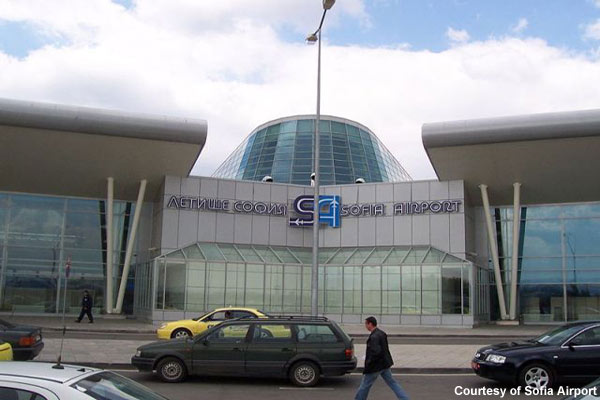
The new front entrance of Sofia Airport.
-
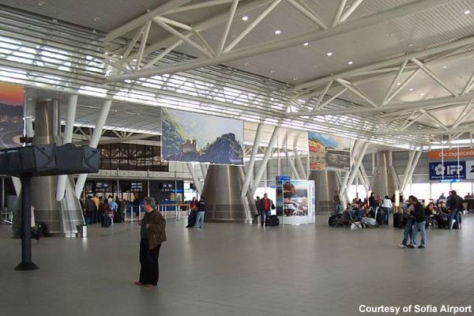
Terminal two at Sofia Airport has a capacity of 2.6 million passengers a year.
-
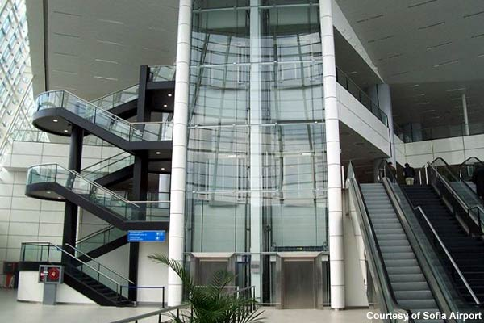
All areas of Sofia Airport's terminal two have good access for disabled passengers.
-
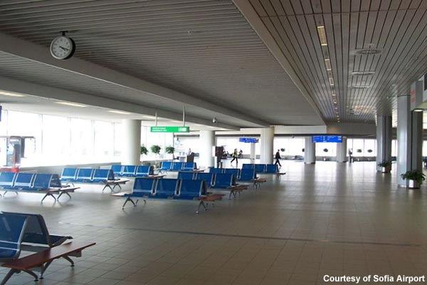
The new terminal has a number of passenger lounges.
-
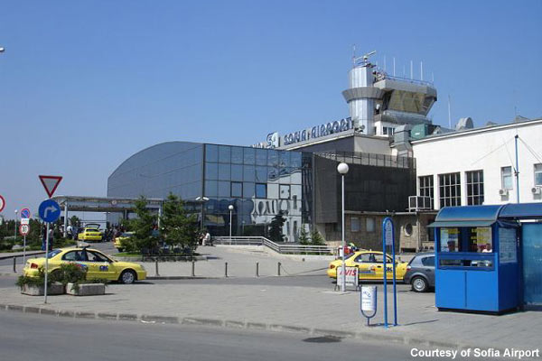
The old and new integrated together at Sofia Airport.
-
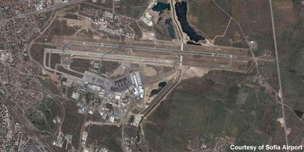
The new runway and the old runway, which has now been converted into a taxiway.
-
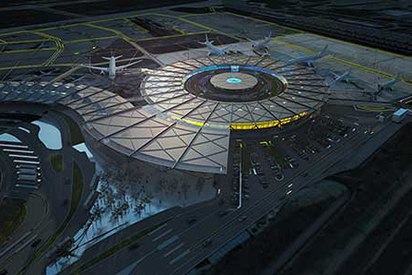
The circular terminal building.
-
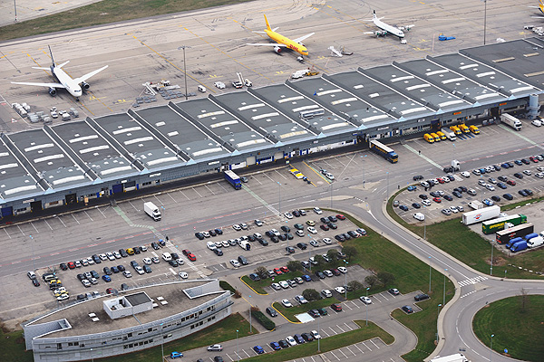
The airport cargo centre covers an area of 50ha.
-
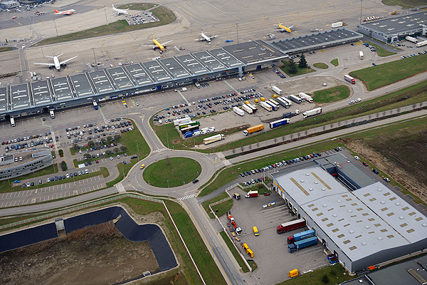
Aerial view of the Lyon-Saint Exupéry Airport.
-
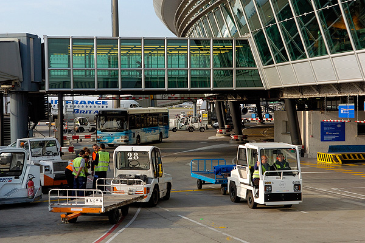
Construction of the future terminal project at Lyon-Saint Exupéry airport is expected to start by Sep 2014.
-
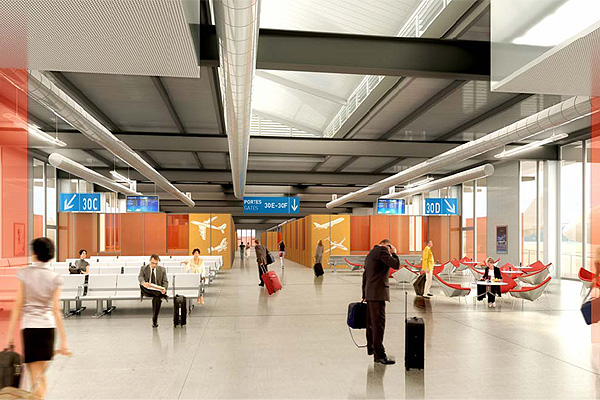
The new future terminal will be linked to the existing Terminal 3 satellite through an underground gallery.
-
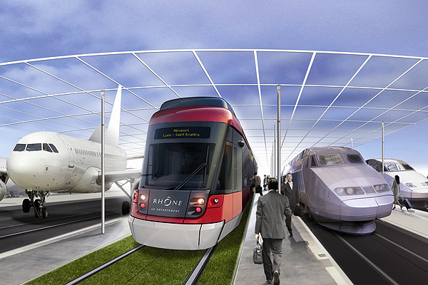
Rhônexpress provides rail transport services for the passengers at the airport.